Interférences
On appelle interférence le résultat de la superposition de plusieurs ondes (mécaniques ou électromagnétiques) en un même point de l’espace.
En physique, on distingue normalement deux phénomènes particuliers qui se produisent lorsqu’on additionne des ondes sinusoïdales :
- L'interférence, quand les ondes ont la même fréquence.
- Le battement, quand les fréquences des ondes sont légèrement différentes.
Par la suite, toutes les ondes étudiées seront sinusoïdales, de même fréquence $f$.
Un exemple de montage d’étude d’une figure d’interférence
Schéma de principe

Deux ondes sinusoïdales de même fréquence $f$ sont émises par les deux émetteurs $E_1$ et $E_2$. L’émission de ces ondes s’effectuant dans un cône, ces ondes ne se superposent que dans la zone hachurée sur le schéma : c’est le champ d’interférence. Dans toute cette région, ces ondes interférent.
Cas de la lumière
Les ondes lumineuses présentent quelques particularités (par rapport aux ondes sonores, par exemple) :
- L’ordre de grandeur de leur période est : $T \approx \pu{1e-15 s}$ ;
- Les atomes émettent de la lumière lors de la phase de désexcitation1. Ils doivent à nouveau être excités avant de pouvoir reprendre une nouvelle émission. Ces différentes émissions se font à la même fréquence $f$ mais avec des phases différentes2.
- Deux atomes différents du même élément chimique émettent des ondes sinusoïdales de même fréquence $f$ mais les phases de ces rayonnements sont toujours différentes3.
Les récepteurs n’étant pas capables « de suivre » les vibrations de la lumière ($f \approx \pu{1e15 Hz}$), ils réalisent une « moyenne ». Ce processus d’intégration nivelle les variations d’intensité lumineuse dans la plupart des situations et le phénomène d’interférences lumineuse n’est généralement pas visible.
… et que la différence de chemin optique est inférieure à la longueur de cohérence (notion pas au programme).
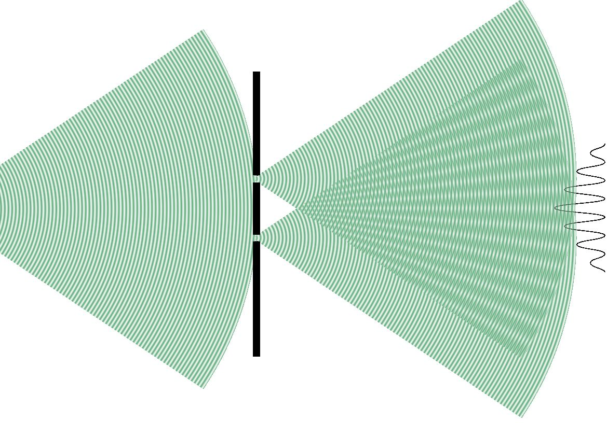
Le montage expérimental doit donc être légèrement modifié lorsqu’on réalise des interférences lumineuses : les sources secondaires sont issues du même faisceau lumineux.
Interférence constructive, interférence destructive
Remarque : En régime sinusoïdal, le retard d’une onde par rapport à une autre se traduit par un déphasage.
Ondes en phase
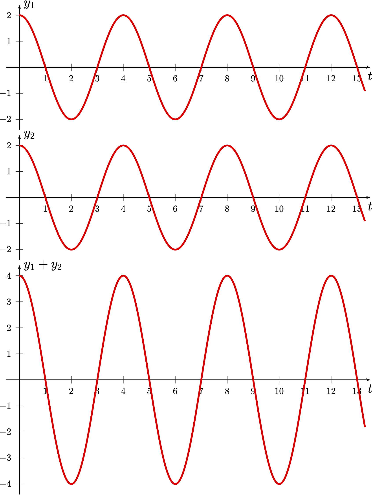
On considère une situation dans laquelle les ondes sont en phase,
-
$\tau =0$ ou $\tau = T$, ou $\tau = 2T$, … ce que l’on peut généraliser en écrivant : $$ \tau = p T $$ avec $p$ entier.
-
Comme $T = \dfrac{\lambda}{v}$ et $\tau = \dfrac{\delta}{v}$, $$ \tau = p T \Leftrightarrow \delta = p \lambda $$ avec $p$ entier.
Interférence constructive
- La différence de marche $\delta$ de deux ondes en phase est un multiple entier de la longueur d’onde $\lambda$ : $$ \tau = p T \Leftrightarrow \delta = p \lambda $$
- L’amplitude de l’addition des deux ondes en phase est égale à la somme des amplitudes de ces ondes : l’interférence est dite constructive.
Rappel
Les élongations des deux ondes qui interférent s’ajoutent toujours. C’est seulement dans le cas d'ondes en phase que cela se traduit par l’addition des amplitudes !
Ondes en opposition de phase
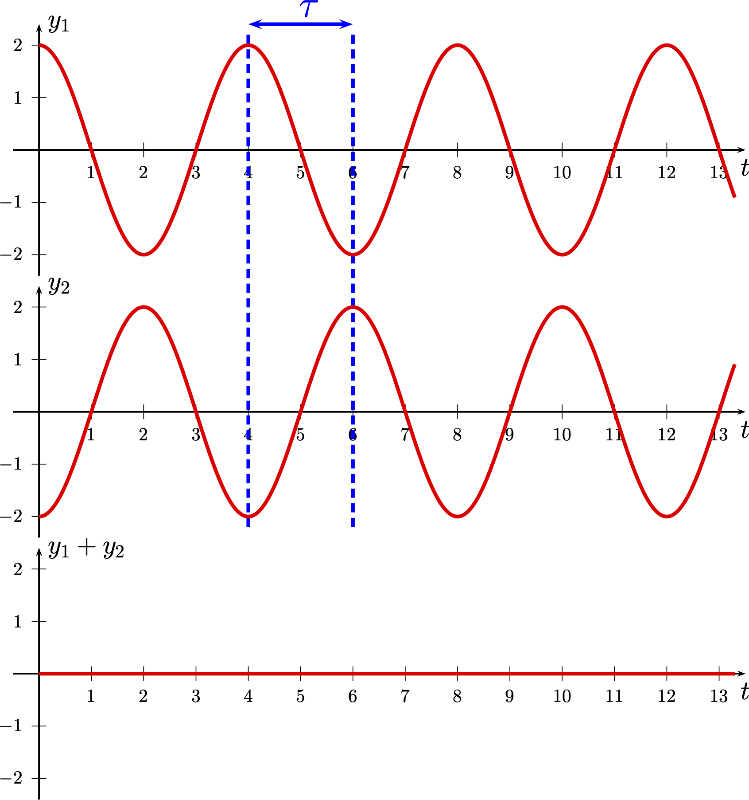
On considère une situation dans laquelle les ondes sont en opposition de phase,
-
$\tau =\dfrac{T}{2}$ ou $\tau = \dfrac{T}{2} + T$, ou $\tau = \dfrac{T}{2} + 2T$, … ce que l’on peut généraliser en écrivant : $$ \tau = (2p + 1) \dfrac{T}{2}$$ avec $p$ entier.
-
Comme $T = \dfrac{\lambda}{v}$ et $\tau = \dfrac{\delta}{v}$, $$ \tau = (2p + 1) \dfrac{T}{2} \Leftrightarrow \delta = (2p + 1) \dfrac{\lambda}{2} $$ avec $p$ entier.
Interférence destructive
-
La différence de marche $\delta$ de deux ondes en opposition de phase est un multiple entier impair de la demi longueur d’onde $\lambda$ : $$ \tau = (2p + 1) \dfrac{T}{2} \Leftrightarrow \delta = (2p + 1) \dfrac{\lambda}{2} $$
-
L’amplitude de l’addition des deux ondes en opposition de phase est égale à la différence des amplitudes de ces ondes : l’interférence est dite destructive.
Rappel
Les élongations des deux ondes qui interférent s’ajoutent toujours. C’est seulement dans le cas d’ondes en opposition de phase que cela se traduit par la soustraction des amplitudes !
Ondes présentant un déphasage quelconque
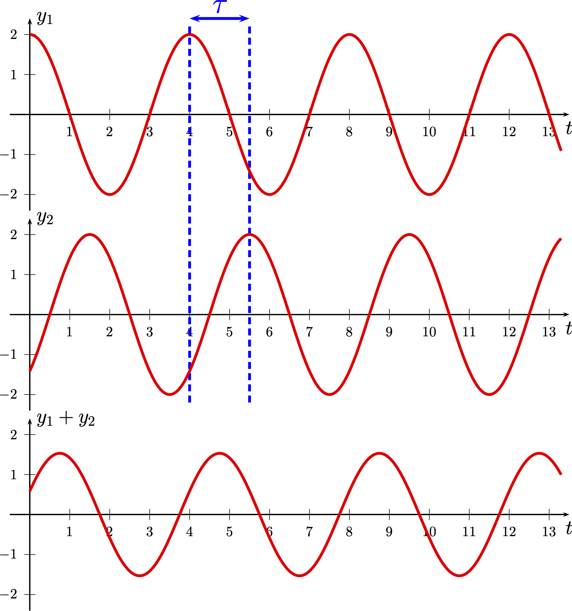
On considère une situation dans laquelle les ondes présentent un déphasage quelconque,
-
$\tau \neq (2p + 1) \dfrac{T}{2}$ et $\tau \neq n T$ avec $p$ et $n$ entiers.
-
Comme $T = \dfrac{\lambda}{v}$ et $\tau = \dfrac{\delta}{v}$, $$ \delta \neq (2p + 1) \dfrac{\lambda}{2} \text{ et } \delta \neq n \lambda$$ avec $p$ et $n$ entiers. On ne peut rien dire de plus sans l’expression des élongations.
Interférence quelconque
- La différence de marche $\delta$ entre deux ondes ni en phase ni en opposition de phase est quelconque.
- Il est alors impossible de prédire sans calcul (ce qui est hors programme) l’amplitude du résultat de l’addition des deux ondes.
Fentes, trous d’Young
La configuration des fentes (ou trous) d’Young est à connaître.
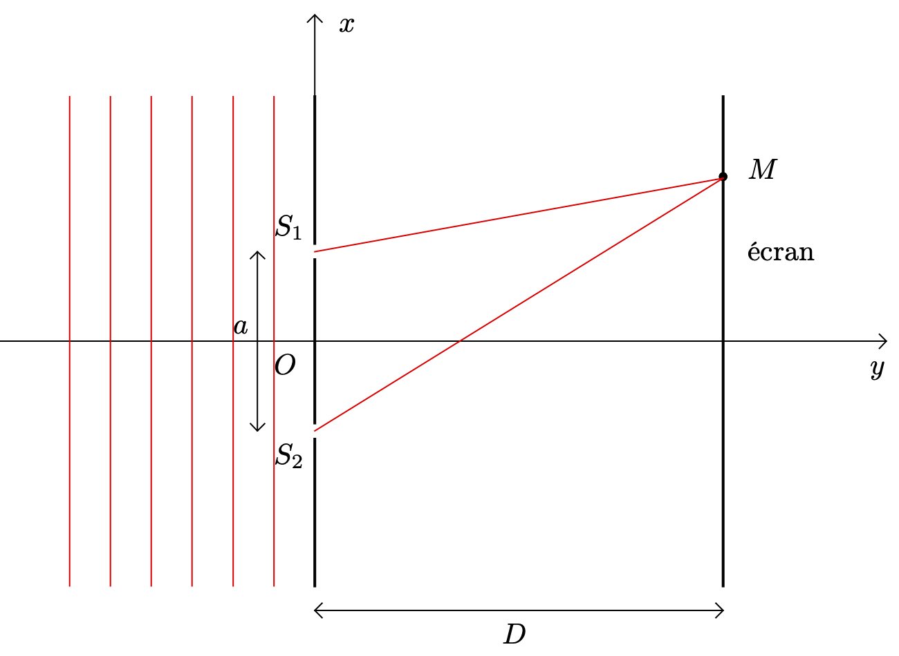
- Une onde lumineuse sinusoïdale de fréquence $f$ éclaire deux fentes (ou deux trous) séparés d’une distance $a$.
- Ces deux fentes agissent comme des sources secondaires synchrones vibrant à la même fréquence $f$.
- Les ondes émises peuvent interférer (dans le champ d’interférences). On observe le résultat de ces interférences sur un écran disposé à une distance $D \gg a$.
Différence de marche
- L’expression de la différence de marche n’est pas à apprendre par cœur. Sa démonstration ne figure pas au programme.
Par contre, il est nécessaire de savoir utiliser cette expression.
Démonstration pour les plus curieux
Résultat à l’écran
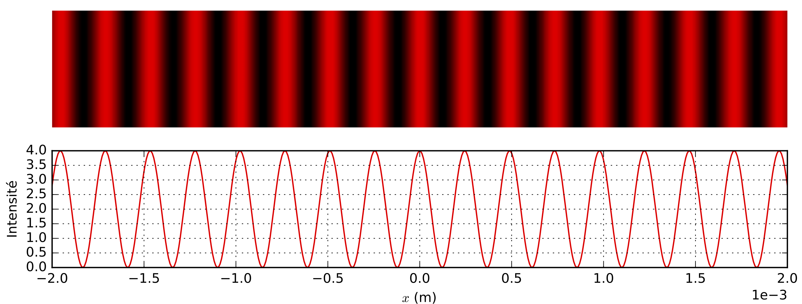
Interfrange
On appelle interfrange $i$ la période spatiale de la figure obtenue à l’écran dans le champ d’interférence.
Si $D \gg a$, $$ i = \dfrac{\lambda D}{a} $$
Influence de la longueur d’onde sur les figures d’interférence
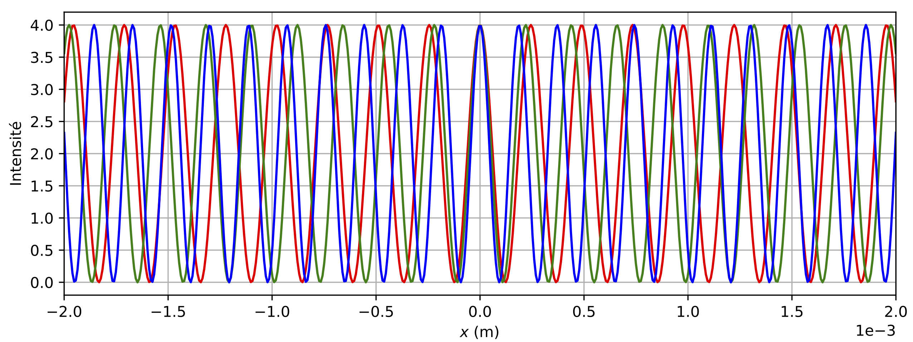
Les lieux où les ondes interférent constructivement (respectivement destructivement) ne sont pas identiques lorsqu’on change de longueur d’onde.
Chaque longueur d’onde conduit à une figure d’interférence spécifique.
Interférence en lumière blanche
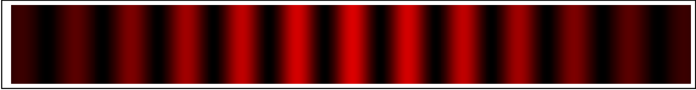 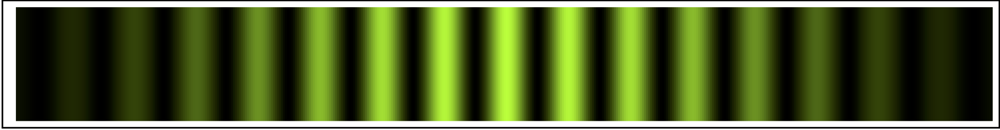 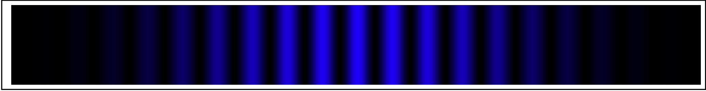 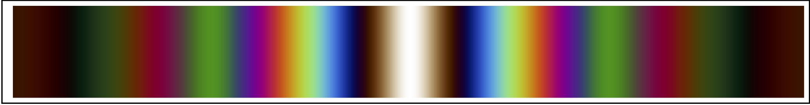
- Les figures d’interférence de chacune des longueurs d’onde se superposent sur l’écran.
- La frange centrale, correspondant à une différence de marche nulle, est « brillante » pour chacune des longueurs d’onde. Elle apparaît donc blanche à l’écran.
- Les autres franges « brillantes » n’étant pas disposées au même endroit dans l’espace pour toutes les longueurs d’ondes, leur superposition conduit à un phénomène d’irisation.